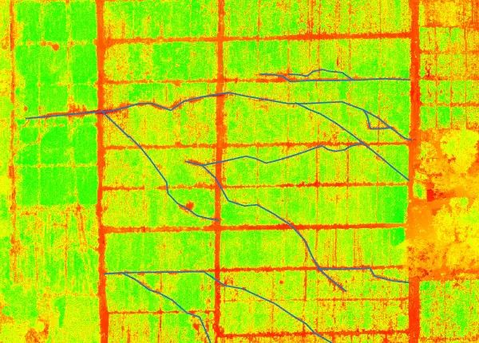

Le drone ADV utilise des systèmes de pulvérisation précise qui ciblent uniquement les zones à traiter. Cette approche réduit considérablement l'exposition des agriculteurs aux produits chimiques, minimisant les risques liés à la manipulation et à l'inhalation de pesticides. En couvrant efficacement les cultures, y compris dans des zones difficiles d'accès, le drone ADV élimine la nécessité pour les agriculteurs d'entrer physiquement dans des zones potentiellement contaminées.
L'aspect de l'analyse de données joue un rôle essentiel dans la modernisation du travail des agriculteurs. Grâce à la télédétection et à l'analyse de données embarquées dans le drone, ADV peut identifier des problèmes comme les maladies, les carences nutritionnelles ou les infestations de ravageurs, bien avant qu'ils ne deviennent visibles à l'œil nu. Cela permet aux agriculteurs de réagir rapidement, réduisant ainsi la nécessité de traitements chimiques excessifs ou de dernière minute qui engendrent souvent de lourdes conséquences économiques et sanitaires.
